hfctf_2020_marksman
总结：
通过这道题的学习与收获有：
1、atol函数放入的数据应该是打包之前的，而非是打包之后的数据
2、exit函数执行流程，exit函数的调用流程exit函数—>run_exit_handlers函数—>_dl_fini函数—> rtld_lock_unlock_recursive指针 如果我们能够将最后的指针所指向的内容修改为one_gadget，那么即可获取shell。这个劫持exit_hook的可取之处在于，程序正常结束的话，最后都会调用这个exit函数
3、学会了重新绑定程序所对应的libc动态库（patch libc和ld）
4、用这个方法可以在开了PIE的程序中下断点。gdb.attach(p, ‘b * $rebase(0xd63)\nc’)
5、one_gadget加上参数-l2可以搜索更多的one_gadget。
6、即使相同的libc库，在小版本不同的情况下，某些内容的偏移也是不一样的。
保护策略：
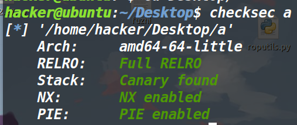
题目分析：
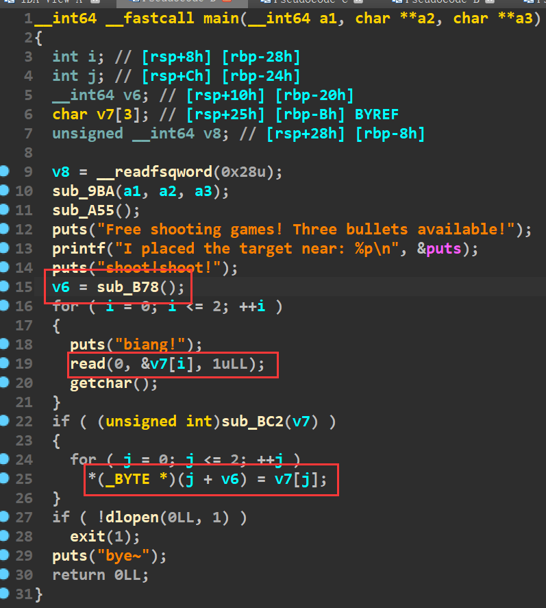
代码很少，漏洞也比较明显，我们可以控制v6的值，以及v7[j]。并且在printf函数中，程序自己打印了Puts的真实地址，就相当于我们已经拿到了libc基地址。
也就是任意地址任意写。这里跟踪一下汇编代码，是怎么实现上述的任意地址任意写的。
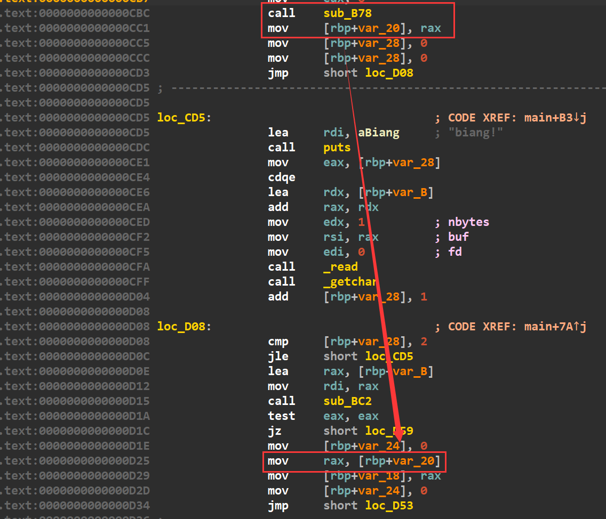
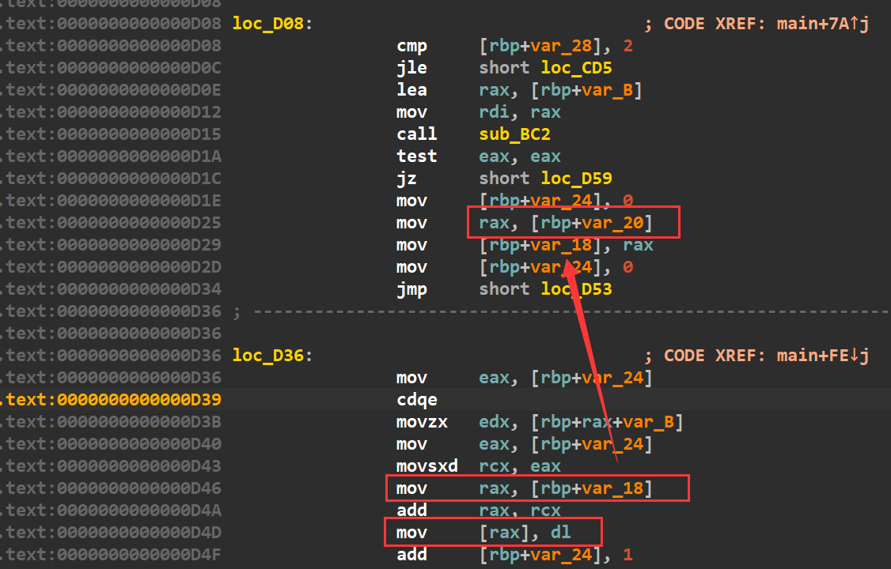
根据上面两幅图片，可以发现，最后的具体实现是mov [rax],dl这部分实现的。而rax最后溯源发现是sub_B78函数的返回值。
可以看见这个sub_B78的返回值就是atol函数的返回值（这个函数是有坑的，下面会说到）
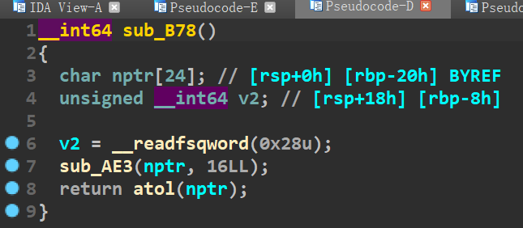
dl就是edx的最低字节。注意，mov [rax],dl []会去rax里面寻址，也就是说我们修改的内容应该被rax所指向。简单来说就是rax必须是个指针，而这个指针指向我们要修改的内容（而不能把rax寄存器里面直接放成我们要修改的内容）
值得一提的是，sub_bc2这个函数存在的目的就是去限制我们的one_gadget
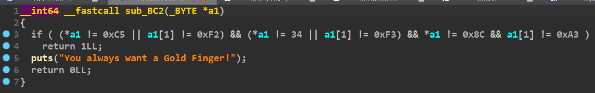
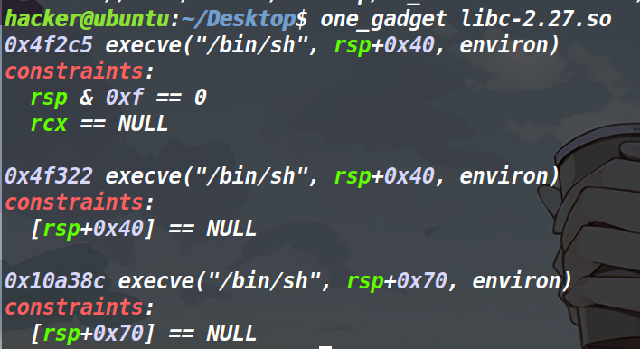
如此，我们现在有两种方法，要么使用one_gadget参数l2，去找寻更多的one_gadget（只不过使用条件可能更苛刻），还有一种方法是将one_gadget地址减5，以此来绕过检查
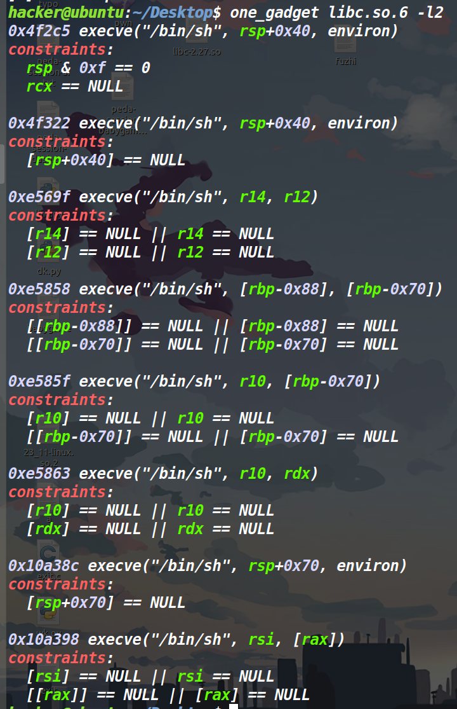
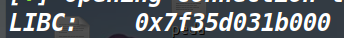
可以发现libc基地址只有后一个字节是00，倒数第二个字节并不完全是0，因此我们减5的话，将one_gadget指令抬高一个指令，这样最后一个字节绕过了检查，而倒数第二个字节加上libc基地址之后，也可以绕过检查。
做题思路
这道题明显看出来也没机会再传参了，那就考虑one_gadget（我们是知道libc基地址的）。由于还可以任意地址任意写三字节，我是优先考虑的修改函数got表，但是很快就会发现程序是开了PIE保护的。got地址并不是固定的，同时我们还泄露不了栈地址，因此这个方法就被我打消了。但是我们是知道libc基地址的，因此我们现在的思路是想办法去libc里面找个指针（这个指针还必须指向一个被执行的地址），然后通过这个指针将one_gadget写入指针所指向的地方，最后获取shell。
关键知识点
通过调试发现了有三个地方都具备这样的指针。
①puts函数调用了__strlen_sse2
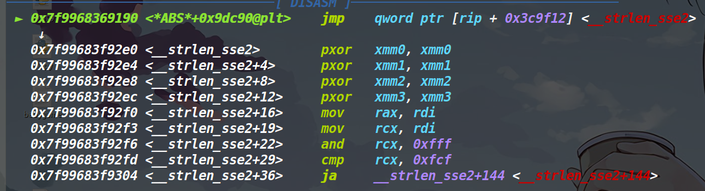
此时该函数已经在我们的动态库里面了，并且再次jmp到 rip+0x3c9f12所指向的地方，那我们只需要以rip+0x3c9f12的地址作为跳板，去将它所指向的地方最后三字节修改为onegadget即可（由于libc中的地址都是以libc基地址加偏移来寻址，这个偏移就占最后的三字节（前面的基地址大家都一样，因此只修改三字节即可）。
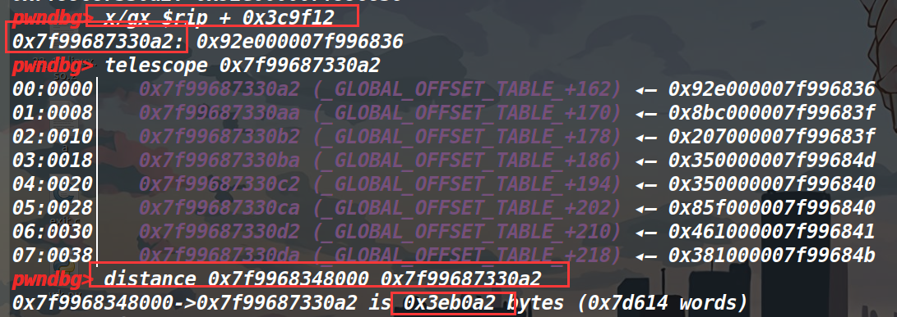
要修改的地址距离libc基地址偏移为0x3eb0a2
② dlopen函数—>_dlerror_run函数—>_dl_catch_error函数
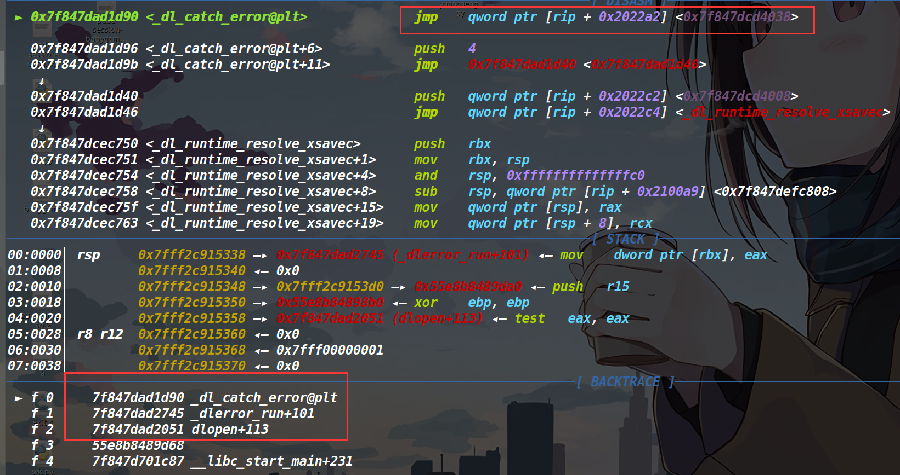
这里原理同上，此时跳到了rip+0x2022a2所指向的地方。
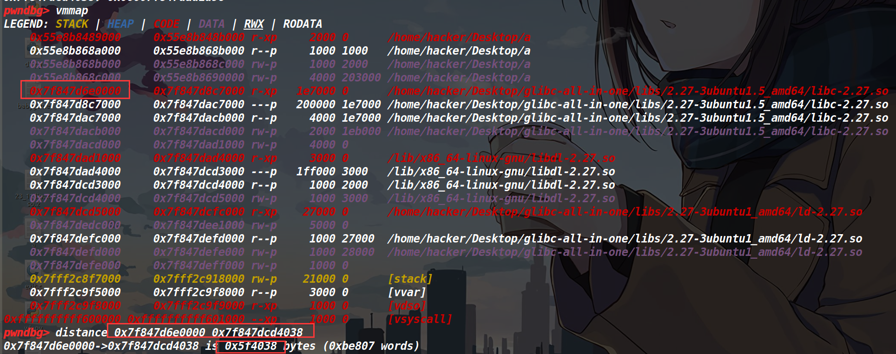
要修改的地址，距离libc基地址偏移0x5f4038
③也是我想重点讲的exit hook劫持。
exit函数的调用流程exit函数—>__run_exit_handlers函数—>_dl_fini函数—> _dl_rtld_lock_recursive指针（这是个结构体指针变量）
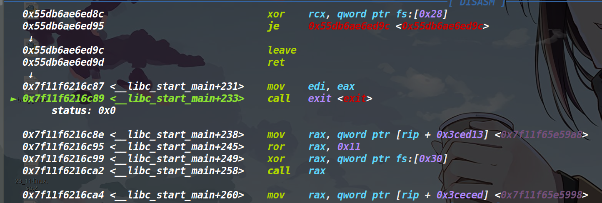
而_dl_rtld_lock_recursive这个指针又指向了 __rtld_lock_default_lock_recursive
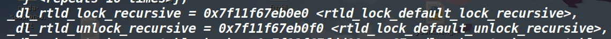
可以看到最后又执行了这个 __rtld_lock_default_lock_recursive
因此我们就把这个_dl_rtld_lock_recursive指针当做跳板，去将它指向的内容（__rtld_lock_default_lock_recursive）也就是修改为one_gadget。
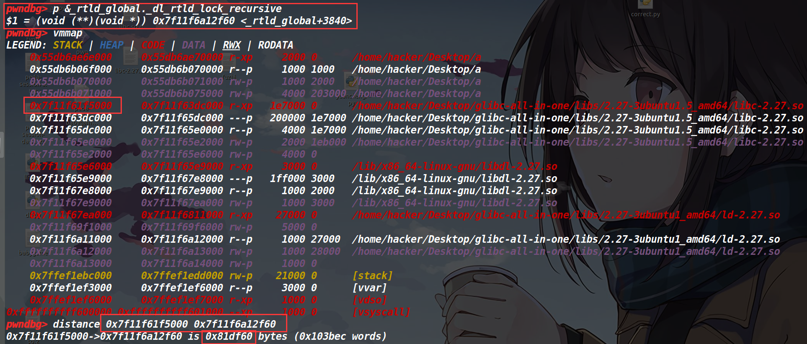
因此这个rtld_lock_default_lock_recursive指针距离libc基地址的偏移为0x81df60。
这里我因为libc的版本卡了很久，原先我那个也是2.27，不过好像是小版本不同，最后得出来的偏移和服务器那边版本的偏移差了0x1000。
patch libc和ld过程
https://blog.csdn.net/qq_41560595/article/details/114597342
这篇文章很详细的记录了patch libc和ld的过程。
我根据这篇文章再做一点补充
想要下载某个版本的libc时，先cat list（此时应该先看上面那篇文章，先下载下来glibc-all-in-one
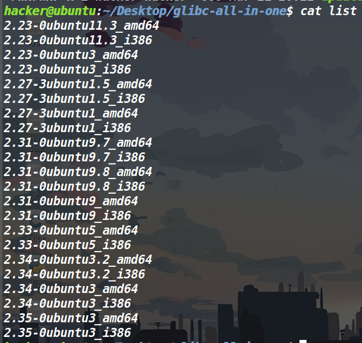
./download去下载下来你想要的libc版本（这道题应该选上图的这个版本）
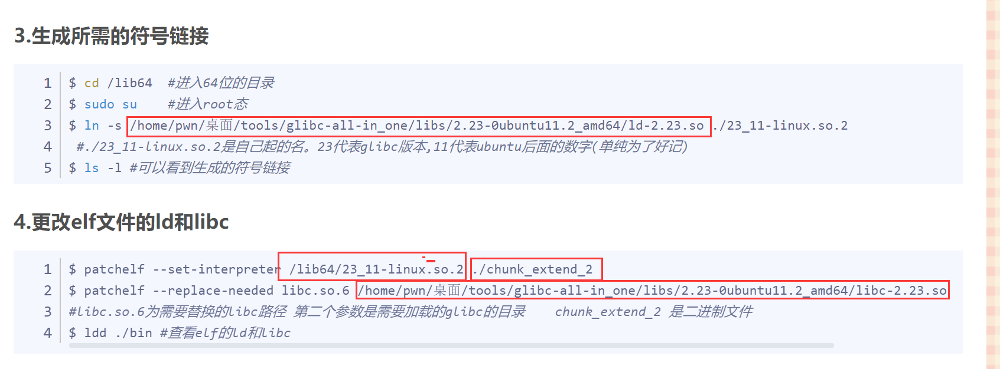
然后上面那篇文章中，这几个红色框的部分，是根据自己的路径来配置（别傻傻的全复制粘贴了）(不是红框的，一律不用改）
这样做的好处就是，本地程序所依赖的libc库和远程的libc是一样的，这样拿到的关于libc基地址的任何偏移本地与远程就都是一样的了。
如果遇见下面这种报错的话
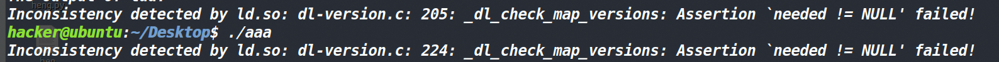
在下载完patchelf之后，进入patchelf的目录，用下面这个命令安装一个工具：
sudo apt-get install autoconf automake libtool |
然后再输入
./bootstrap.sh |
之后就ok了。
再说关于atoi函数的那个坑。
结论
遇见atol函数的时候，要发打包前的数据，而不是打包后的数据
因为传给atol的参数会被遇见第一个不是0~9的字符所截断 从而返回之前的值，举个例子，你想打包的数据是1234，那么被打包之后就是\x04\x03\x02\x01，这些都是不可见字符，传入atol之后直接就被截断，导致atol返回值为0，使得后续的流程是错误的。
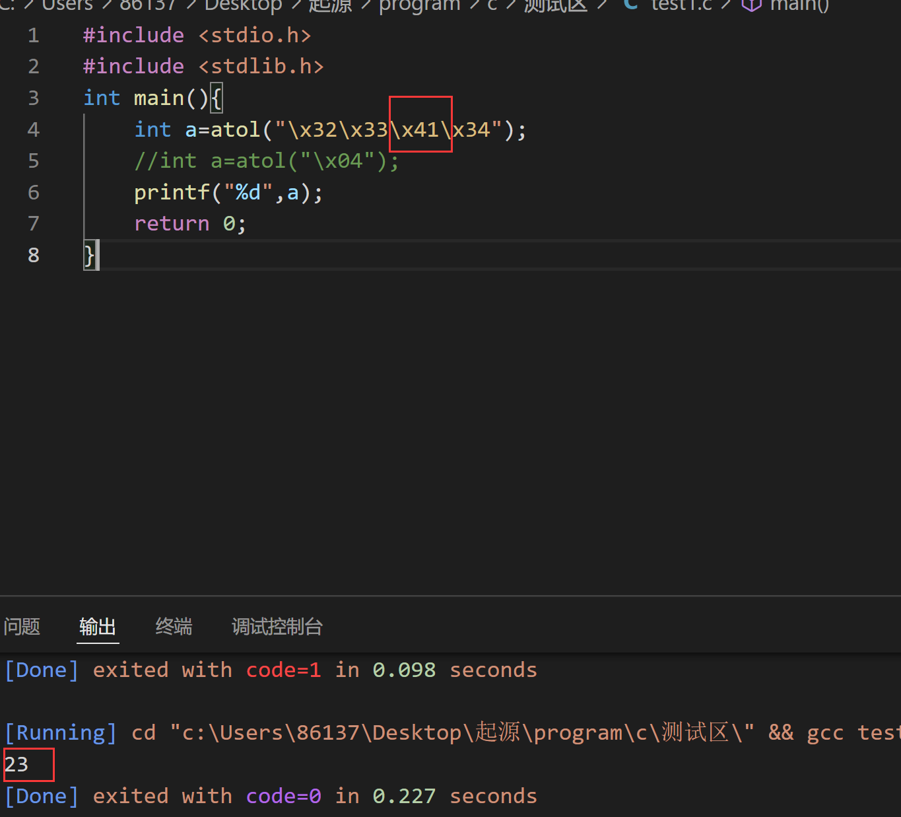
exp
打远程
#coding:utf-8 |
打本地
#coding:utf-8 |
如果复制粘贴还打不通的话，九成九是libc版本的问题（本人就一菜鸡，如果写的哪有问题，欢迎指正）。